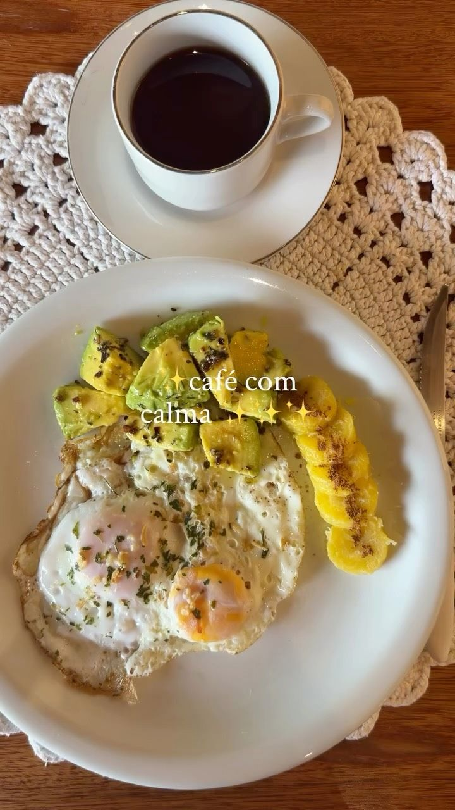
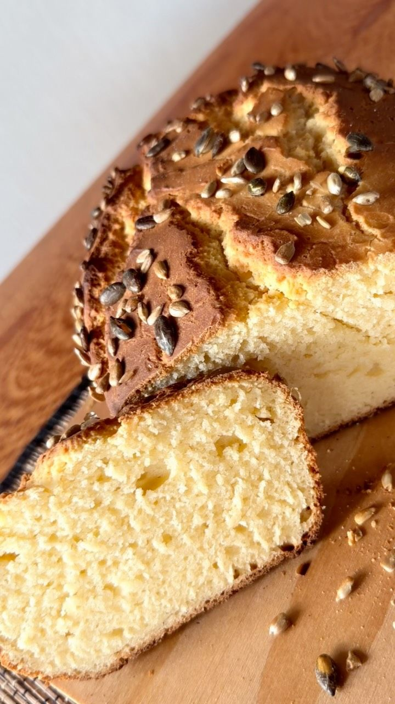
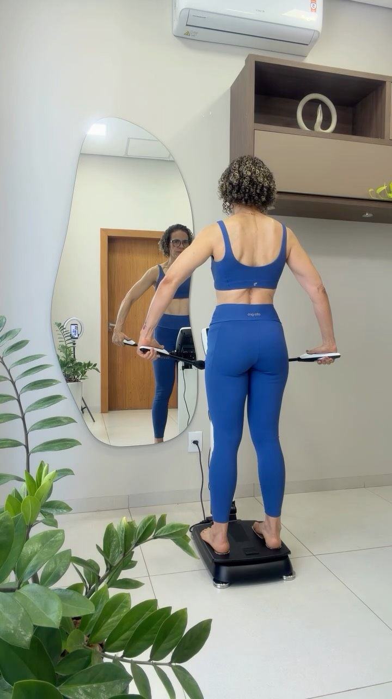

Comida de verdade, cuidado de perto.
Sou a Sueli Ribeiro, nutricionista clínica em Rondônia. Acompanho você no emagrecimento, no diabetes, na tireoide, no intestino, no fígado e nas intolerâncias alimentares.
CRN7/RO 17285Registro no Conselho Regional de Nutricionistas


Prazer, Sueli Ribeiro.
Sou nutricionista clínica e trabalho com acompanhamento individual: cada plano começa pela sua história, pelos seus exames e pela rotina que você tem de verdade.
No Instagram eu mostro como penso a alimentação no dia a dia: pratos coloridos, receitas possíveis e informação com base científica, sem complicar o que pode ser simples.
- RegistroCRN7/RO 17285
- AtuaçãoNutrição clínica, Rondônia
- Instagram@nutri.sueliribeiro
Onde eu posso te ajudar
Seis frentes de cuidado clínico. Toque em cada uma para ver como o acompanhamento olha para ela.
-
Emagrecer com saúde e sem radicalismo, inclusive para quem usa medicamentos análogos de GLP-1 e precisa cuidar da alimentação durante o tratamento.

-
Orientação alimentar para o controle da glicemia e o cuidado com a saúde metabólica, ajustada aos seus exames e ao seu dia a dia.
-
Alimentação pensada para quem convive com alterações hormonais e da tireoide, como o hipotireoidismo, em conjunto com o acompanhamento médico.
-
Estratégias alimentares para um intestino mais equilibrado, com mais conforto e bem-estar na rotina.

-
Cuidado nutricional voltado à saúde do fígado, com mais vegetais, escolhas possíveis e ajustes graduais.

-
Substituições inteligentes e receitas saborosas para quem precisa evitar glúten, lactose ou outros alimentos.



Do primeiro “oi” ao acompanhamento
Quatro etapas, no seu ritmo. Role para acompanhar o caminho.
-
Você manda uma mensagem
Conta o que está buscando, tira as dúvidas e escolhe o melhor dia para a consulta.
Agendar consultaSueli RibeiroNutricionistaOlá, Sueli! Vim pelo site e gostaria de agendar uma consulta. -
Avaliação inicial
Uma conversa detalhada sobre saúde, rotina, histórico e exames, com bioimpedância quando indicada.

-
Plano alimentar feito para você
Com alimentos que cabem no seu gosto, no seu bolso e na sua semana, e materiais práticos como a lista de compras.

-
Acompanhamento e ajustes
Retornos para acompanhar a evolução, responder dúvidas e ajustar o plano com base no que funciona para você.


Receitas práticas, saborosas e sem complicação
Informação simples para escolhas melhores
Conteúdo educativo. Não substitui consulta.
Mais dicas no InstagramQuem já fez o acompanhamento
Antes da primeira consulta
Não encontrou o que procurava? Mande uma mensagem e a Sueli responde.
Agendar consultaSua consulta começa com uma conversa.
Mande uma mensagem contando o que você procura. A Sueli responde com os próximos horários e tudo o que você precisa saber para a primeira consulta.
- RegistroCRN7/RO 17285
- RegiãoRondônia